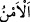

etmesinin mümkün olduğunu söyler.
Mânâ şöyledir: İhtilâfa düşmeksizin hükümleriyle amel etmeye devam ettikleri
takdirde Allah onların dînini muhakkak sâbit ve yerleşmiş kılacağını...
et-Tâc’da belirtildiği üzere “
” seçip beğenmek, râzı olmak demektir.
et-Te’vîlâtü’n-Necmiyye’de der ki: Allah, halifelerden her sınıfa, dinlerinin çeşitli
mertebelerinden kendileri için seçip yüklediği emâneti taşımaya imkân tanır. Çünkü
onlar İslâm’ın rükünlerinin imamları ve dînin önderleridir. Allah’ın kullarına nasihat
eden, isteyenleri Allah’ın yoluna ileten ve dini koruyan kimselerdir. Bunlar birkaç
sınıftır:
Bir gurup Rasûlullah (s.a.)’in sünnetlerinin ve Kur’ân’ın hâfızları ve koruyucularıdır.
Bunlar bekçiler yerindedirler.
Bir grup usûl âlimleridir ki açık delillerle inad ve ve bid’at sâhiplerine cevap
verirler. Usûlü, felsefe ilimleri ve onların şüpheleriyle karıştırmazlar. Çünkü felsefe
helâk edici büyük bir tehlikedir. İslâm’ın önde gelenleri ve yiğitleri olan derin âlimler
ve hak ile hareket eden velîlerden başka hiç kimse bu tehlikeden kendini kurtaramaz.
Bir grup fakihlerdir ki ibadât ve muamelât konuları gibi şer‘î ilimlerde onlara
mürâcaat edilir. Onların dindeki yeri, mülkte vekil ve tasarruf sâhibi kimselerin yeri
gibidir.
Bir grup ise ma‘rifet ehli, hakîkatların sâhipleri, sülûk erbâbı, hem kâmil hem de
kemâle erdiren kimselerdir. Bunlar Allah’ın gerçek halifeleri, âlemin kutupları, göğün
direkleri ve yeryüzünün kazıklarıdırlar. Gökler ve yer onlar sayesinde ayakta durur.
Onlar dinde, hükümdarın seçkin adamları ve vezirleri yerindedirler. İşte din kıyâmete
kadar değişik tabakalardaki bu guruplarla mâmur bir şekilde devam edecektir.”
“Ve” onları geçirdikleri düşmanlarından “korku döneminden sonra, bunun yerine
onlara” düşmanlarından “güven sağlayacağını vaad etti.”
“
” bir şeyi, diğerinin yerine koymaktır ve “
”dan daha geneldir. Çünkü “
”, birincisini vermekle ikincisinin senin olmasıdır. “
” ise bedelini getirmesen
bile değiştirme için kullanılır.
“
(güven)”, asıl anlamı korkunun gidip nefsin huzûr ve sükûna kavuşması
demektir. Peygamberimizin ashabı hicretten önce on seneden fazla bir süre hep korku
içinde idiler. Sonra Medine’ye hicret ettiler. Orada da üzerlerinde silahla sabahlıyor ve
silahla akşamlıyorlardı. Nihâyet Allah vaadini yerine getirdi. Onları bütün Araplara
galip kıldı ve doğu ve batı ülkelerinin tamamının kapılarını açtı.
Peygamber halifesi zamanın sultanlarının ünleri an be an
An be an yeryüzünü baştan başa kaplayacak
Onun himmet doğanı kudret kanadını açacak olsa
Süreyya yıldızından yerin altına kadar kanatlanacak